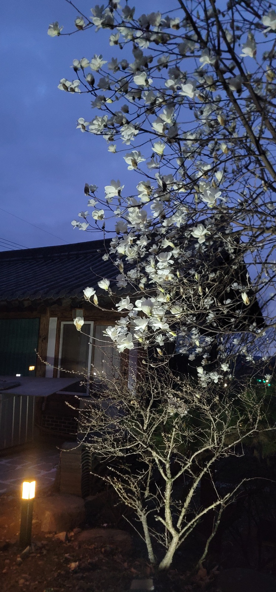

오랜 시간을 견뎌온 나무의 숨결
차담한옥은 한옥이 지닌 시간의 결을 존중하며, 현대의 휴식 방식에 맞게 재해석한 공간입니다. 오래된 목재와 흙, 그리고 절제된 편의가 균형을 이루어 머무는 내내 마음의 속도를 낮춰줍니다. 아침에는 처마 끝으로 스며드는 빛을, 밤에는 마당 위로 내려앉는 정적을 느껴보세요. 이곳에서의 하루는 여행보다 깊은 쉼에 가깝습니다.
01
전통의 온기
세월을 견뎌온 고재 서까래와 황토벽이 자연의 숨결을 그대로 머금고 있습니다.
02
사색의 여백
다도와 홈카페, 잔잔한 음악으로 복잡한 일상의 번잡함을 내려놓는 쉼을 전합니다.
03
온전한 독채
하루 오직 한 팀만을 위해 열려있는 프라이빗한 공간에서 방해 없는 시간을 누리세요.